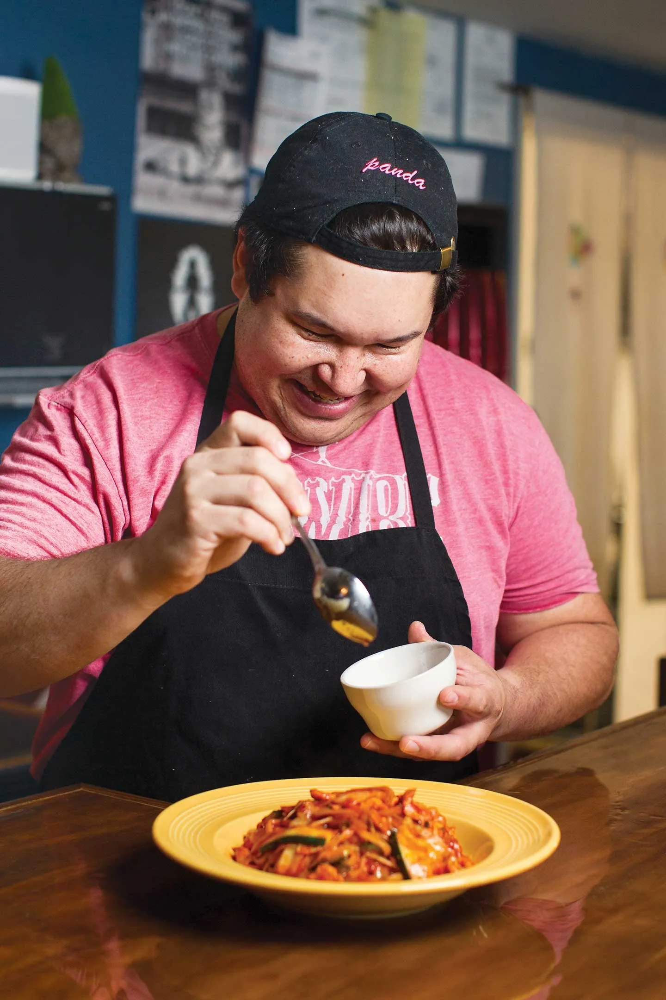
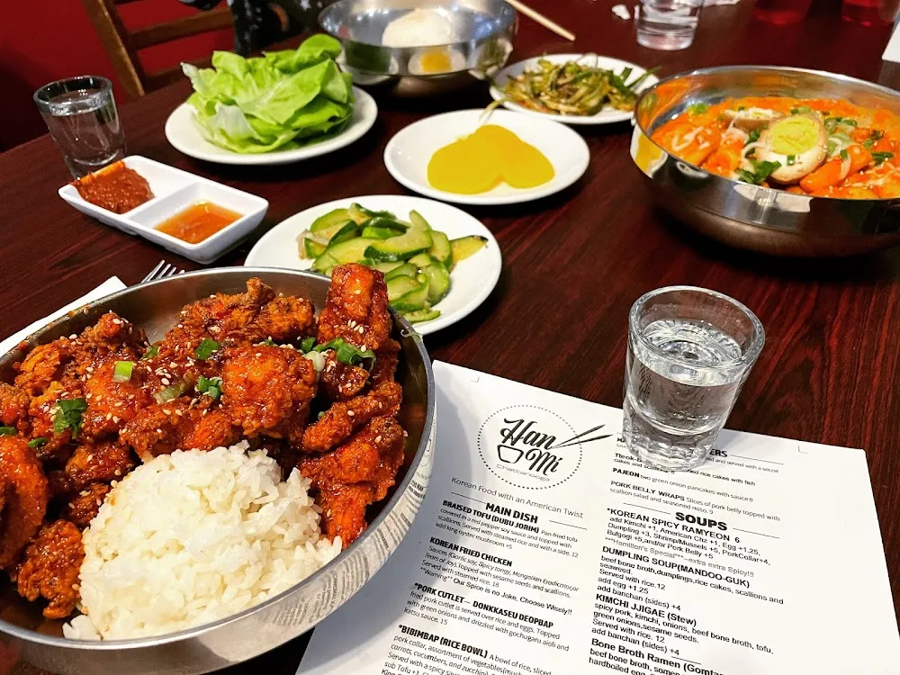

Chef David Sherrill

About the Chef - Han-mi
Chef David Sherrill aka Chef Panda, grew up working in the restaurant scene with his mother. "I started actually line cooking when I was 16," Sherrill said. "Back then, I loved the pace of it. It was a different scene in Chattanooga ... the pace of it was exhilarating. I was thrilled with it."
After many years of building his own skills working in kitchens, testing recipes, and doing pop-ups around town, Chef David Sherrill finally opened up his own restaurant named "Han-mi". Since 2020, Sherrill and his family have been supplying the Chattanooga area with delicious Korean food with a slight American Twist.

Review
In my personal opinion, Han-Mi is some of the most authentic Korean food you can get in the area. Despite advertising as "Korean with an American twist", I feel it stays very true to modern Korean dishes served in the main-land. The flavor-profiles here are better than some places I've visted in Korea town near Atlanta. Han-mi is, hands down, one of my personal favorite restaurants of all time. I've never had anything I didn't like there. The food truly brings me back to my own childhood, growing up eating the Korean food my mom made me. Every dish served is made with love. Whenever anyone asks me where to get good Korean food, I say "Han-mi, you gotta go to Han-mi".
Han-mi changes their menu seasonally, so be sure to check them out at different times of the year to try something new. Though, they have a few staples that stay on year round, such as their Korean Fried Chicken and classic assortment of KBBQ.
Han-mi also has a very good cocktail menu, with Soju based drinks. They always hit the spot and leave me feeling relaxed and refreshed.